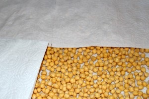
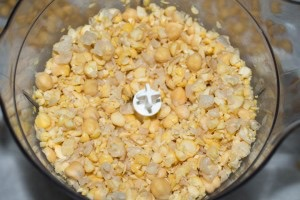
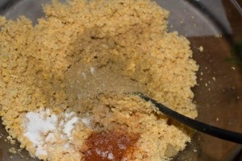
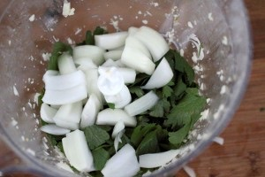
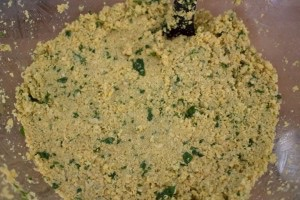
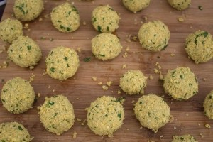
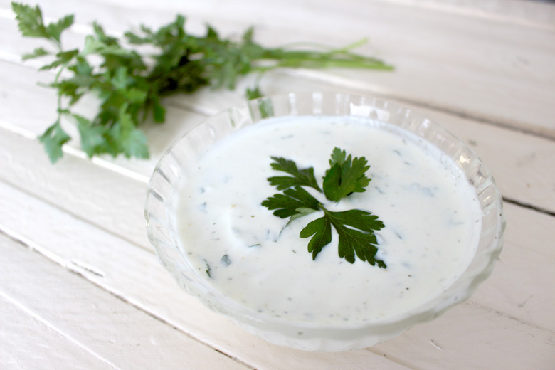
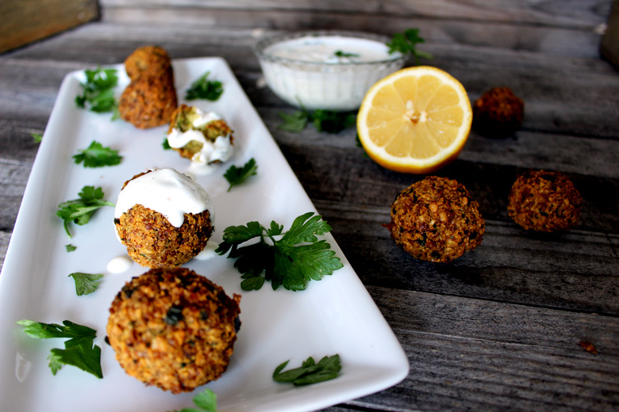
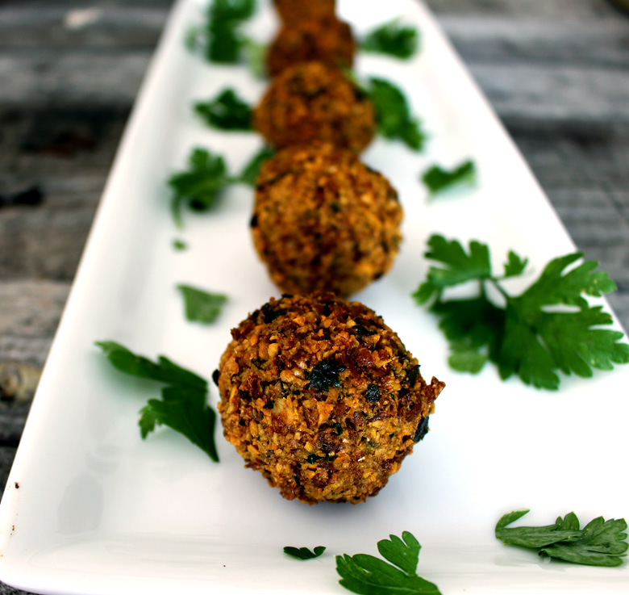

Falafels maison et sa sauce au yaourt

Aujourd’hui on se retrouve pour une spécialité culinaire très populaire au Proche-Orient: la recette des falafels.
Parlons un peu de cette petite boulette aux parfums d’ailleurs qui fait de plus en plus fureur chez nous!
Je ne parlerai pas de l’origine des falafels car c’est encore une zone d’ombre et vous pouvez d’ailleurs les trouver sous l’appellation Tamiya notamment en Égypte… La seule chose que je peux vous dire c’est que moi j’ai découvert les falafels dans un restaurant libanais puis évidemment lors de mon voyage à Jérusalem! Ce que j’en dit c’est que c’est petites boulettes deviennent très rapidement « addictives »!
Les falafels font partis du quotidien alimentaire d’une grande partie du Proche-Orient. Quand chez nous on se « goinfre » de fastfoods et autre « malbouffe » en tous genres, eux dévorent de délicieux sandwichs de falafels (même le macdo de Jérusalem nous propose le Mc Falafel comme s’il pouvait égaler le « vrai » sandwich de falafels du coin^^)!
Vous trouverez des falafels aux fèves, aux pois chiches ou encore un mix des deux. Agrémentés d’épices puis frites dans l’huile ces boulettes sont servies en mezzé avec une sauce au yaourt, tahini ou encore dans un bon pain pita dans lequel est ajouté du houmous, du tahini, une salade et pleins d’autres bonnes choses…
Ma recette de falafels est une recette de falafels aux pois chiches. Très légèrement croquants à l’extérieur mais bien moelleux à l’intérieur j’ai décidé de les servir avec une sauce au yaourt dans un bon pain pita.
Si vous souhaitez accompagner vos falafels d’un délicieux houmous la recette est ICI et pour ceux qui souhaitent aller encore plus loin vous pouvez aussi faire de délicieux burgers végétariens aux falafels comme ceux présentés juste en dessous avec la recette juste ICI.
Je vous laisse découvrir ma recette de falafels et j’espère qu’elle vous plaira 🙂
Pour les adeptes de recettes « Vegan » celle-ci est faite pour vous!!!
Ingrédients
- Pois chiches secs - 500 g
- Ail - 4 gousses
- Persil frais - 1/2 bouquet
- Coriandre fraîche - 1/2 bouquet
- Oignon - 1
- Coriandre en poudre - 2 càc
- Cumin en poudre - 2 càc
- Cardamone en poudre - 1 càc
- Bicarbonate de sodium - 1 càc
- Sel - 1 pincée
- Huile pour friture
- Graines de sésame dorées pour les enrober - 2 càc
- Yaourt grec - 225g
- Ail - 1 gousse
- Cumin - 1 càc
- Persil frais - quelques feuilles
- Poivre blanc - 1 càc
- Citron - 1/2
Instructions
- Laisser tremper les pois chiches au moins toute une nuit dans deux fois leur volume en eau froide
- Égoutter les pois chiches et les laisser sécher (au moins deux heures) entre deux feuilles de papier absorbant (c'est très très important qu'ils soient bien secs!!)
- Mettre les pois chiches secs dans un robot ménager et donner de légères impulsions car le but n'est pas d'obtenir une purée ou une pâte de pois chiches. Répéter l’opération plusieurs fois. Il faut obtenir des pois chiches finement hachés et qui s’agglomèrent entre eux
- Ajouter les épices aux pois chiches hachés, le bicarbonate de sodium et une pincée de sel
- Hacher très finement l'oignon, l'ail, le persil et la coriandre fraîche /! si vous nettoyez les herbes fraîches, faites les correctement sécher
- Incorporer les herbes hachées aux pois chiches
- Mélanger. Normalement vous devez constater que votre préparation s’agglomère facilement
- Former des boules de la taille de votre choix et bien serrer car elles ont tendance à s’émietter (j'en ai fait 30 de tailles moyennes). Vous pouvez les parsemer de sésames dorés avant de les faire frire mais pour cette fois je ne l'ai pas fait!
- Mettre de l'huile de friture dans une casserole et laisser la chauffer
- Une fois l'huile chaude, faire frire les falafels pendant 4 min environ. Si les boules formées se délitent à la cuisson c'est que vous n'avez pas bien fait sécher les herbes ou les pois chiches (ou que vous avez acheté des pois chiches en boîte^^)
- Sortir les falafels de l'huile à l'aide d'un écumoire et égouttez les dans une assiette avec du papier absorbant
- Servez immédiatement !!!
- Dans un bol verser le yaourt
- Ajouter le jus d'un demi citron
- Ciseler le persil et écraser la gousse d'ail puis les ajouter à la sauce
- Incorporer les épices
- Bien mélanger
- Réserver au frais pendant la cuisson des falafels









Les tips de la communauté
Recette très appréciée pour son simplité et son résultat excellent. Les pois chiches secs sont essentiels pour éviter un foirage. Plusieurs lecteurs confirment que c'est délicieux et bien meilleur que les versions achetées. La texture croquante à l'extérieur et moelleuse à l'intérieur est unanimement louée.
Astuces
- Les pois chiches DOIVENT être secs - les faire sécher une nuit entière pour de meilleurs résultats
- Ne JAMAIS utiliser de pois chiches en conserve - ils feront échouer la recette
- Ajouter une pincée de sel dans les ingrédients
- Laisser sécher les boulettes quelques heures avant friture pour meilleure tenue à la cuisson
- Frite directement dans l'huile sans panier pour éviter qu'elles collent
Variantes suggérées
- Possible d'enlever la peau des pois chiches pour meilleure digestibilité (fastidieux)
- Sauce au tofu soyeux pour adaptation végan (remplace la sauce yaourt)
- Utiliser farine de pois chiches n'est pas recommandé - préférer les pois chiches entiers
Ajustements signalés
- Les pois chiches en conserve causent un foirage immédiat - utiliser absolument des pois chiches secs
- L'humidité excessive empêche de former des boulettes - bien sécher les ingrédients
- La cuisson en friteuse avec panier peut faire que les falafels collent et se cassent